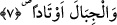

“firâş” kelimesi kullanılmakta ve “O Rab ki, yeri sizin için bir döşek (firaş) göğü de
(kubbemsi) bir tavan yaptı” (el-Bakara 2/22) buyurulmaktadır.
İbni Şeyh “el-Mihad” kelimesinin masdar olduğunu söyler. Buna göre âyetin mânâsı
şöyle olmuş olur: Biz yeryüzünü kişinin yere sermiş olduğu sergi ve yaygı üzerinde öte
beriye gittiği gibi onların gezip dolaşmaları için yayılmış bir sergi kılmadık mı?
Diğer bir ifâdeyle “yoksa yeryüzünü size serilmiş bir yatak, ikamet ettiğiniz ve yer
değiştirdiğiniz bir mahal yapmadık mı?”
“Mihâd”ın, “beşik” anlamındaki “mehd” kelimesinin çoğulu olabileceğini söyleyenler
de olmuştur. Bu takdirde kelimenin çoğul olarak getirilmesi yeryüzünün üzerinde kimi
yerlerin köy, kimi yerlerin yerleşim birimleri, beldeler, kimi yerlerin de başka biçimde
olmasından veya yeryüzünün çeşitli maksadlarla kullanılmasından dolayıdır. Söz gelimi
yerkürenin bir kısmı tarla, bir kısmı yerleşim birimleri diğer bâzı kısımları da başka
maksadlar için kullanılmaktadır. Bu âyet-i kerîme “beşik” anlamına “mehden” şeklinde
tekil olarak da okunmuştur. Bu kırâata göre yeryüzü, çocuğun yatmış olduğu beşiğe
benzetilmiş olur. Bilindiği üzere beşik çocuk için hazırlanan ve üzerinde uyuduğu
döşektir. Dolayısıyla kelime burada “masdar” olmak üzere “hazırlanmış” anlamında
kullanılmıştır.
7. Dağları da birer kazık yapmadık mı?
Dağların yeryüzü için birer kazık yapılması, yeryüzünün sakin durup, üzerindekilerin
sallanmaması amacıyla sağlam bir şekilde tesbit edilip, yere çakılması anlamındadır.
Zira yeryüzü suyun üzerinde sallanıp duruyordu. Şu halde dağların kazık yapılması tıpkı
herhangi bir çadırın kazıklarla yere iyice çakılıp sallantıdan kurtarılması gibidir. Bu
ifâde bir “teşbih-i beliğ” kabilindendir.
“Evtâd”, “veted” kelimesinin çoğuludur. Arapçada “veted”, ağaçtan yapılmış olan,
sallanıp hareket eden herhangi bir nesneyi yere çakıp sağlamlaştırmaya yarayan kazık
demektir.
Burada “Allah Teâlâ’nın irâdesi ve kudreti yeryüzünü sağlamlaştırmaya yetmiyor
muydu da dağlar gibi bir kazığın yeryüzüne çakılmasına ihtiyaç duyuldu?” şeklinde bir
tereddüd meydana gelecek olursa buna şöyle cevap verilir: Evet Allah’ın kudret ve
irâdesi buna yeterlidir. Ancak Allah Teâlâ aynı zamanda sebeblerin de yaratıcısıdır. Bu,
ise O’nun kudretinin mükemmelliğinden kaynaklanan bir unsurdur.
Bâzı âlimler âyette yer alan “evtâd” kelimesini gerçek anlamında kullanıp buna
seyyid, evliyâ, havassu’l-asfiyâ anlamı vermişlerdir. Gerçekten evliyâ, seyyidler ve has
kullar yeryüzünde sâbit dağlar gibi varlık arzı bunlarla sâbit hale gelir.
Ebû Said Harraz (k.s.)’a “evtâd” ve “ebdâl”den hangisinin daha üstün olduğu